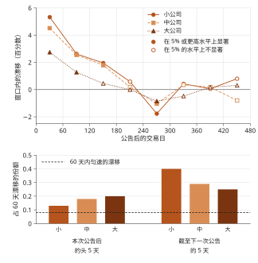

第 24 章 实证地图与交易优势体检
Busse 与 Green（2002）在 2000 年 6 月 12 日至 10 月 27 日的每个交易日给 CNBC 录像，在 84 个交易日里记录了 322 条股票报道。他们的获利窗口（window for profit）只用午间节目（Midday Call）里的正面报道，共 125 条。他们计算了在不同时刻买入的收益，买入时刻从报道前 5 分钟到报道后 30 秒，卖出在报道后 1 至 2 分钟之间；为了考虑买卖价差（bid–ask spread），即可以买入和卖出的价格之间的差距，他们的买入价取自买方发起的成交，卖出价取自卖方发起的成交。报道后 5 秒内买入，平均赚 40 个基点（1 个基点是 0.01%），15 秒内买入赚 16 个基点；超过 15 秒，平均收益在统计上不再显著，超过 25 秒则为负。1
5.5 节的边界框给出这些数字的限制，本章保留这些限制：窗口只对 125 条午间正面报道成立；全部报道中有 80% 以上涉及 NYSE 市值最大的两个十分位的公司，所以作者称他们的结果是价格对信息作出反应的速度的上界；2000 年的最小报价单位和执行速度与今天不同。我们像 10.9 节那样，把这个窗口读作公共信息（public information）的梯度多快用尽的一个量级（order of magnitude），时间尺度（time scale）由注意力的延迟和执行订单的延迟决定，没有口碑（word of mouth）（本书的判断）。本章不评判任何策略，其中没有一处是买入或卖出的建议（本书的判断）。
最后一章要问，证据显示了哪些梯度，每一个靠什么维持（24.1 节），以及交易者在相信一个优势之前可以检查什么（24.2 节）。
24.1 节的证据去掉了表 5.1 为本章列出的三条默认，此外还有别的：一次性注入（one-time injection），通过定期公告和广播（本章开头和 24.1.1 节）；贝叶斯更新（Bayesian updating），通过对盈余的错模型（wrong model）、过度自信（overconfidence）和旧闻（stale news）（24.1.1、24.1.4 和 24.1.5 节）；无限注意（unlimited attention），通过分心（distraction）、未被看到的资产之间的联系和可见度（24.1.1 至 24.1.3 节）。本章的读法和模型去掉的其他默认，不在表 5.1 为本章列出的放宽之内：一条消息同时涉及两项资产，去掉单一外生事实（single exogenous fact）（24.1.2 节）；受限的卖空（short selling）和交易费用（trading costs），去掉无摩擦交易（frictionless trading）（24.1.3、24.2.2 和 24.2.3 节）；会反转的可预测噪声需求，去掉外生交易对手（exogenous counterparty）（24.1.5 节）；价格冲击（price impact），去掉价格接受者（price taker），并用 Kyle 的风险中性内幕交易者（insider）代替对数效用（log utility）（24.2.1 节）。
24.1 信息梯度的实证地图
1.3 节把信息梯度（information gradient），即价格尚未反映的信息，分成两部分：还没传开的信息（undiffused information），它还没有传到靠交易决定价格的人那里；还没想明白的信息（undigested information），它已经传到他们那里，但价格还没有正确吸收。1.8 节把按这两部分整理证据的事留给了本章。表 24.1 给出每一项属于哪一部分、维持它的机制和给出该机制的章，以及本书对它有没有定量标杆（quantitative benchmark），即一个要由分别测得的输入来解释的数。把一项放进某一部分，是本书对其来源的读法：多数项在两部分里都可能有份，没有哪个来源测过它的差距各有多少属于哪一部分（本书的判断）。
表 24.1 信息梯度的实证地图
| 项目 | 证据 | 属于梯度的哪一部分（本书的判断） | 靠什么维持（本书的判断） | 定量标杆 |
|---|---|---|---|---|
| 盈余漂移 | Bernard 与 Thomas，NYSE 与 AMEX，1974–1986；DellaVigna 与 Pollet，1995–2006（工作论文版） | 按作者对其表 5 的读法是还没想明白；在投资者分心的地方是还没传开 | 对盈余的错模型；分心；下一次公告把它截断；当时小投资者的往返交易（round trip）成本，按本书的读法，它给 Bernard 与 Thomas 的漂移设了界（第 10、12、23 章） | 已登记；对时间形态的解释尚未检验 |
| 客户消息与供应商价格 | Cohen 与 Frazzini，客户数据 1980–2004（工作论文版） | 按本书的读法是还没传开；没有排除看到了消息但权重过低 | 注意力分散在有联系的资产上（第 10 章）；按本书的读法，还有共同的持有人（第 19 章） | 无 |
| 注意力与可见度 | 周五公告，1995–2006（工作论文版）；Miller 尚未检验的假说 | 周五是还没传开；Miller 的渠道，通过谁能买入，两部分都不属于 | 有限注意；对 Miller 来说是受限的卖空和意见分歧（第 10、19 章） | 周五的延迟已测量（10.2 节） |
| 冷门股 | Merton 的模型（工作论文版）；Hong、Lim 与 Stein，1980–1996（工作论文版） | 水平效应在第二部分的风险溢价项里；动态效应是还没传开 | 知情者之间的风险分担（第 19 章）；公司特有的消息传得慢（第 20 章） | 水平效应已登记；尚未检验 |
| 选择性事件之后的漂移 | Daniel、Hirshleifer 与 Subrahmanyam 的模型 | 还没想明白 | 反应不足和事件选择一起（第 12、15 章） | 无；是模型的结果 |
| 旧闻与情绪 | Tetlock，标普 500 的消息 1984–2004 和一个专栏 1984–1999（工作论文版） | 旧闻是还没想明白；情绪在关于该事实的梯度之外 | 旧消息重复计数；公开内容推动的需求（第 10、13 章） | 无 |
| 论坛上的研究帖 | Bradley 等，2018–2020 年的报告，在 GameStop 之前（工作论文版） | 来源没有显示 | 没有显示；按本书的读法，买入报告带有关于价值的信息（第 15 章） | 无 |
比特币和其他币在第 22 章，已发表异象的衰减在第 23 章。本书没有读过关于复杂公司的来源，所以它们在地图上没有一行。2
24.1.1 盈余漂移与公告日历
图 24.1 根据 Bernard 与 Thomas（1989）印出的数字，画出他们的盈余公告后漂移（post-earnings-announcement drift）的时间形状，即价格在数月里沿盈余意外的方向继续移动，对象是 1974 至 1986 年的 NYSE 与 AMEX 公司（5.5 节、第 12 章开头以及 12.1 节和 12.4 节）。
上图给出公告后每个 60 个交易日的窗口里，SUE 最高十分位减最低十分位的异常收益（abnormal return），即超出基准收益的部分。SUE 是标准化未预期盈余（standardized unexpected earnings），即一个自回归模型对季节差分盈余的预测误差，除以它的标准差。图中分别画小、中、大公司，即按 1 月 1 日的市值（market value）在全部 NYSE 与 AMEX 公司中的规模十分位 1 至 4、5 至 7 和 8 至 10，对比的是规模十分位相同的 NYSE-AMEX 公司。在每个规模组里，漂移在第 1 至 60 天的窗口最大，随后三个窗口的漂移都比它小；第 241 至 300 天的漂移为负，三组都显著（12.1 节）；再往后的窗口在 5% 或更高的水平上都不显著。
下图给出 60 天漂移的两个份额。公告后 5 天以内，小、中、大公司分别占 60 天漂移的 13%、18% 和 20%，而在 60 天里匀速的漂移只会占 8%；与它们并列的是截至并包括下一个季度公告的 5 天里的份额，这组份额对比的是规模十分位相同的 NYSE 公司。

两张图合起来，显示的漂移开头最大，在头 240 天里缩小，到第 241 至 300 天显著转负（本书的判断）。截至下一次公告的 5 天里有 60 天漂移的 25% 至 40%，是匀速漂移的 8% 的 3 至 5 倍（本书的计算）。作者的结论是，漂移中不成比例的一大部分集中在下一季度公告之前和包括公告在内的几天里，这个集群由公告日历定时（本书的判断）。根模型（root model）里的口碑给出 S 曲线（S-curve），先慢，后快，再慢（1.5 节）；那里很强的外部来源（external source）也会使漂移在开头最大，只要 1.5 节的价格规则成立（本书的推论；1.9 节），而二者都不会在公告处聚集。就下一次公告窗口的证据而言，日历决定了形状的一部分，而该窗口之外的漂移使本书不能说它决定了全部（本书的判断；12.4 节）。
关于属于梯度的哪一部分，Bernard 与 Thomas 发现，他们表 5 的结果与这样一个市场相符：它没有认识到当期盈余对未来盈余的全部含义，他们把漂移看似存在的上界称为他们唯一与盈余预期的不完全更新不相符的结果。按他们的话，盈余是“广泛传播、可以免费获得”的信息，所以按他们的读法，漂移属于还没想明白（本书的判断）。DellaVigna 与 Pollet 把周五公告之后多出的延迟读作分心（工作论文版；10.2 节），而分心的投资者没有看到的消息是还没传开（1.8 节）；两个来源都没有测漂移在这两种读法之间怎么分（本书的判断）。
有两项检验可以用分别测得的输入核对对漂移的解释，本书两项都没有做（本书的判断）。一项是对错模型的检验，用季节差分季度盈余的序列相关（serial correlation）和每单位盈余意外的价格反应，预测下一次公告时的收益，再与表 5 比较；前者只从盈余本身测得，后者只在公告日测得（本书的推导；12.5 节）。另一项用分别测得的往返交易成本给漂移设界（23.4.2 节）。两项都不从漂移里反推它的输入，在其中一项做出之前，本书不印关于时间形态的自己的数字。3
24.1.2 客户消息与供应商价格
在 Cohen 与 Frazzini（2008）1980 至 2004 年的客户数据里，供应商的价格要用几个月跟上客户价格的大幅变动（工作论文版；10.2 节和 10.8 节）。他们的客户动量（customer momentum）策略做多最好的 20% 客户消息好的股票，做空最差的 20% 客户消息坏的股票（工作论文版）。他们写道，两条腿的异常收益虽然都大而显著，但收益是不对称的，多空收益主要由坏消息的缓慢扩散（diffusion）推动（工作论文版）。在他们的表 III 里，按市值加权，客户收益五个五分位组合的三因子 alpha，即扣除三个常见风险因子之后剩下的收益，从最低到最高依次是每月 −1.062、−0.796、−0.541、−0.227 和 0.493%，多空组合（long-short portfolio）的是 1.555%，对象是上月底收盘价至少 5 美元的股票（工作论文版）。
中间三个五分位组合也是负的（工作论文版）。从零算起，空头一侧的 1.062 大于多头一侧的 0.493；从中间的五分位组合算起，多头一侧的 1.034 大于空头一侧的 0.521（本书的计算），都由工作论文的 alpha 算出（工作论文版）。等权时同样的 alpha 是每月 −1.166、−0.661、−0.446、−0.304 和 0.140%，两种算法下空头一侧都更大，从零算起是 1.166 对 0.140，从中间的五分位组合算起是 0.720 对 0.586，而 Q5 的 alpha，即从零算起的多头一侧，t 统计量是 0.71（工作论文版）。作者写道，等权给出相近的结果（工作论文版）。
客户的消息已经在客户的价格里，而尚未传到给供应商定价的人那里，所以本书把这一项放在还没传开这一部分，不过这些表排除不了看到了消息但给它的权重太小的持有人（本书的判断；10.2 节）；10.8 节和 19.3.5 节给出了机制，即注意力分散在一条消息所涉及的资产上，按本书的读法，还有决定速度的共同持有人。在按市值加权的 alpha 里（工作论文版），收益主要由哪一条腿承担取决于基准，所以它们没有给出坏消息传得更慢的清楚证据；等权的 alpha 在两种算法下都是空头一侧承担大部分，与作者说的不对称一致，而整张表并没有把这件事定下来（本书的判断）。4
24.1.3 注意力、可见度与冷门股
这张地图对注意力的测量，是 DellaVigna 与 Pollet 对周五公告之后多出的延迟的测量，数据是 1995 年 1 月至 2006 年 6 月的美国季度盈余公告，它的边界框在 10.2 节（工作论文版）。Miller（1977）假定一个卖空受限、投资者对收益的估计各不相同的市场，提出假说：凡是增加投资者对一只股票的知晓的东西，都会抬高它的价格，渠道是持最乐观预期的少数人的需求。注意力在那里通过谁能买入作用于价格，而本书的来源没有检验这个假说，所以表 24.1 只把它当作假说，并把这个渠道放在梯度的两部分之外（本书的判断；19.3.6 节）。
冷门股（neglected stock），即很少有投资者了解或很少有分析师跟踪的股票，带有两种效应，一种作用于价格的水平，一种作用于价格的路径，检验时必须把二者分开（本书的判断；19.3.6 节）。水平效应（level effect）是 Merton（1987）的，用本书的白话说：只有了解一只证券的人才承担它公司特有的风险，所以了解的人越少，他们要求的收益越高（本书的判断；19.3.2 节），模型把了解的人所占的份额当作给定（工作论文版）。动态效应（dynamic effect）是 Hong、Lim 与 Stein 的：在他们 1980 至 1996 年的数据里，排除了低于 NYSE/AMEX 规模分界点第 20 百分位的股票，动量（momentum）策略在分析师覆盖（analyst coverage）低的股票里效果特别好，规模保持不变，他们在信息逐步扩散（gradual information diffusion）的理论里读这个结果（工作论文版；20.2.4 节）。水平效应是对知情者之间分担风险的补偿，是梯度第二部分的风险溢价项（risk-premium term）的一部分（18.6、18.7 和 19.3.2 节），而动态效应是还没传开的信息（本书的判断）。5
24.1.4 选择性事件之后的漂移
在 Daniel、Hirshleifer 与 Subrahmanyam（1998）的过度自信投资者模型里（12.5 节），选择性事件（selective event）是发生与否或大小取决于当时错价（mispricing）的事件，例如股票被低估时的回购（15.2.3 节）。对这样的事件，他们写道，漂移来自反应不足（underreaction）和以市场错价为依据的事件选择的结合；信心水平固定时，与错价无关的事件不带来系统性漂移，而在信心随结果上升和下降的版本里，连这些事件也带来可预测性（12.5 节）。反应不足和选择一起造成漂移，所以地图没有把它们列为两个来源（本书的判断）。
因此，对事件之后漂移的检验必须说明它怎么给事件分组：按已实现的事件，例如 Bernard 与 Thomas 相对于公司自身过去盈余的盈余意外，按相对于市场预期的意外，或按事件当天的收益；这三种分组问的是不同的问题（本书的判断）。这些是模型的结果，本书没有检验过（12.5 节）。对公开信号（public signal）的反应不足是还没想明白的信息，而选择来自知道错价的发送者，例如挑选回购时机的管理层（本书的判断；15.2.3 节）。6
24.1.5 旧闻、情绪与噪声需求
10.7、13.11 和 23.6.2 节给出了 Tetlock 的两项研究：在 1984 至 2004 年关于标普 500 公司的消息里，旧闻即带有大量已经报道过的信息的消息，对旧闻的反应在下一周部分反转，他没有回答这种反转在交易费用之后还在不在；在 1984 至 1999 年的一个《华尔街日报》专栏和道指的数据里，负面情绪对道指的影响在一周内完全反转（工作论文版）。
旧闻是重复计数（double counting）的旧消息，是还没想明白的信息（本书的判断；10.7 节）。情绪（sentiment），即与关于基本面（fundamentals）的消息无关而又推动需求的乐观或悲观，不改变任何人对 的了解，即价格所针对的那个事实，所以它在关于该事实的梯度之外；对交易者来说，它是关于未来噪声需求的信息，即出于信息以外的原因的交易（本书的判断；13.11 节）。
一次变动是否反转是检验的标准，但反转只表明这次变动是暂时的，它本身分不清情绪、重复计数、注意力吸引来的买入，和风险厌恶（risk aversion）的一时变化（本书的判断；13.11 节）。解读反转需要许多事件的平均、长到足以看出反转的期限，以及排除同一窗口里的其他消息（本书的判断）。7
24.1.6 论坛上的研究帖
15.4 节给出了 Bradley 等（2024）对 WallStreetBets 上尽调报告（due diligence report）的研究，2018 至 2020 年间发布了 2,340 份报告，这个截止时间使他们的全部分析都在 GameStop 和其他模因股（meme stock）的疯狂收益之前，而且他们的买入推荐之后的收益没有反转（工作论文版）。按本书对这个样本的读法，买入报告带有关于价值的信息（本书的判断；表 15.2），但一份报告传播的是别人没有见过的事实，还是对公共数据的分析，来源没有区分，所以表 24.1 把它所属的部分标为来源没有显示（本书的判断）。8
24.1.7 报价、时钟时间与价差的偏差
在 Easley 与 O’Hara（1992）的模型里，报价，从而成交价，以指数速率向强式有效的值收敛，按时钟时间（clock time）计，即用钟表量的时间，而成交价是真实价格过程的一份有偏记录；只能追踪价格数据时，报价可能是更好的数据集（23.4.3 节）。本书测量速度或衰减的规则，即 23.4.3 节留给本章的方法，是使用报价中点（quote midpoint），即买价与卖价正中间的价格，从消息发布的那一刻起按时钟计时；以成交笔数计的事件时间，或像 Bernard 与 Thomas 那样以交易日计，适合数月的漂移，不能给分钟级的反应计时（本书的判断）。
Glosten 与 Milgrom（1985）论证，在他们模型的一个变体里，未知情交易者（uninformed trader）预期一个固定的正收益，价差的存在意味着，在任何一段时期里，按成交价测得的收益往往高估流动性交易者（liquidity trader）实际能实现的收益：初始价格平均低于他必须付的卖价，最终价格平均高于他能预期收到的买价。于是，一个正常持有期（holding period）里测得的收益，约等于一个正常收益加上一个只有内幕交易者才能得到的收益，那是未知情者预期输给知情者的部分（18.7 节）。所以由逆向选择（adverse selection）产生的价差，即与信息更好的人交易的风险，按他们的话是解释小公司效应（small-firm effect）和被忽视公司效应（ignored firm effect）的“一条可能的途径”，用本书的白话说，就是小公司股票和很少有人跟踪的股票的测得收益更高。
他们在一个脚注里补充了 Blume 与 Stambaugh（1983）的结果：价差可以通过对真实价格的测量错误，使测得的预期收益向上偏（据 Glosten 与 Milgrom 的转述）。
对测量来说有两点结论（本书的判断）。Blume 与 Stambaugh 说的对真实价格的测量错误，是数据里的偏差，报价中点可以消除它。Glosten 与 Milgrom 的差距留在按成交价、中点或价值测得的收益里，不论这些有多准确，只有从流动性交易者实际支付和收到的价格，即买入时的卖价和卖出时的买价，算出的收益里才会消失，在他们的变体里这样算出的收益是正常的。两者在价差宽的地方都更大，例如在小公司里（本书的判断）。表 24.1 各项研究里来自成交价的收益，尤其是小股票或流动性差的股票的，可能带有其中任何一种（本书的判断）。9
24.2 交易优势体检
本节的规则各带它所需的前提，检验的是优势的结构；没有一条告诉人买什么、卖什么，好的答案也不会使一笔交易变得安全（本书的判断；1.9 节）。
24.2.1 市场深度与容量
优势能有多少表现为利润，取决于市场的深度（本书的判断）。在 Kyle（1985）的模型里，一个风险中性的内幕交易者，其信息来自外部给定，躲在噪声交易者（noise trader）后面。市场深度（market depth），即把价格推动一美元所需的订单流（order flow），与噪声交易（noise trading）的量成正比，与尚未进入价格的私人信息（private information）成反比，而内幕交易者的预期利润随他能躲进去的噪声交易成比例地增长，他的信息中到达价格的份额则与噪声交易无关（4.6 节）。
本书把知情交易者（informed trader）可以躲进去的、与信息无关的交易称为容量（capacity），把一个优势在成本把它用尽之前可以交易的规模称为策略容量（strategy capacity）。在 Kyle 的模型里，二者都随噪声交易增长（本书的推论；1.9 节），所以本书把它们当作从两侧看到的同一个量（本书的判断）。规则：在小规模上测得的优势，不能说明它在大规模上还剩多少，第一个问题是那只股票的市场有多深（本书的判断）。10
24.2.2 跨股票换算容量
按本书的推导（数学框 24.1），Kyle 与 Obizhaeva（2016）的不变性把这样一个规模从一只股票带到另一只。他们的假设说，风险转移的分布，他们称之为下注（bet），以及交易成本（transaction cost）的分布，按每单位业务时间（business time）计量时在各资产之间相同，业务时间以下注到来的速率流逝，而他们的交易活跃度（trading activity），即美元成交量与收益波动率的乘积，在最低与最高的组之间相差 150 倍（第 17 章开头）。于是，百分比交易成本与两者的乘积成正比：一个是非流动性的度量，即收益方差除以美元成交量再开立方，另一个是下注规模的某个不变函数，下注规模先经过缩放，换算成不变的美元风险转移。不变性不限制这个函数的形状，它可以是线性的，也可以是平方根的。
这里把容量按美元风险计量，即最佳订单的美元规模乘以日波动率；除以日波动率，得到美元数额。如果每交易一美元的优势，扣掉价差项，以日波动率为单位，在两只股票里相同，那么容量在线性冲击下按交易活跃度的三分之二次方增长，在平方根下与它成正比（本书的推导）。活跃度大 150 倍时，容量在线性冲击下大约是 28 倍，在平方根下是 150 倍（本书的计算）。线性和平方根的模型都能很好地解释成本（17.8 节），所以指数有这么大的不确定（本书的判断）。
这样的换算需要下面每一个前提（本书的判断）：两个不变性假设都成立，把成交量和波动率与下注联系起来的乘数在每只股票里相同；两种已校准的成本形状之一；扣除价差项之后的优势，以日波动率为单位，在两只股票里相同；订单作为一笔下注执行且自己没有其他下注；成本取自组合转换（portfolio transition）订单上的测量，作者认为这类订单不大可能依赖短命的私人信息，所以知情的订单可能付得更多，而数学框 17.4 的 ，即 Kyle 的每单位订单流的价格变动，把每笔下注都当作噪声，是一个有待核对的下界（本书的推导；17.8 节）。不变性本身只近似成立：作者的统计检验通常拒绝它，不过结果在经济上很接近，而且由于市场摩擦，他们不期望它在所有资产、所有时间上严格成立。第 17 章开头的边界框给出这些检验的限制，即 2001 至 2005 年在组合转换中交易的美国股票，常数是用同样的订单拟合的。11
24.2.3 执行成本模型的三项检验
3.7 节、数学框 3.2 和 17.7 节给出了 Huberman 与 Stanzl（2004）的条件。他们的交易者对资产价值没有比别人更好的信息，可以交易任意想交易的数量，面对的他人的净交易为零或服从正态分布，公开消息（public news）和他人的订单相互独立、均值为零（工作论文版）。3.7 节在它们的技术意义上定义了价格操纵（price manipulation）和准套利（quasi-arbitrage），前者是预期利润为正的往返交易，后者是由这类往返交易组成的序列，其预期利润和夏普比率（Sharpe ratio），即预期利润除以它的标准差，无限增长；本书只用这些条件来检验冲击模型。
第一项检验要求永久冲击（permanent impact）是线性的。当交易的价格冲击是永久的、且在任何时候都相同，只有线性的价格冲击函数能排除准套利：他们的命题 1 要求永久冲击线性且斜率非负，才能排除准套利，并在交易靠得足够近时排除操纵（工作论文版；数学框 3.2）。
第二项检验要求价差不小于永久冲击。如果没有价格操纵，或没有无界操纵（unbounded manipulation），而 笔交易的固定成本与 成正比、，他们的命题 2 给出两个条件，在交易靠得足够近时必须成立（工作论文版）。作者把第一个条件读作：任何交易规模下的预期价差，都必须超过该笔交易导致的预期价格更新（工作论文版）。他们补充说，没有准套利一般并不蕴含这些条件（工作论文版），所以这项检验依赖没有操纵和成本前提。
第三项检验要求交叉冲击是对称的。有多项资产时，没有价格操纵等价于冲击函数是线性的，并由一个半正定矩阵表示，于是每一个交叉价格冲击（cross-price impact），即交易一项资产引起另一项资产的价格变动，都是线性的、两两对称的：资产 对资产 的冲击与 对 的相同（工作论文版）。半正定矩阵是这样一种矩阵：没有任何交易组合能使价格总体上朝对它有利的方向变动，每项资产的价格变动按其中交易的数量加权（本书的推导）。这在作者调整他们的单资产命题 4 的地方成立，该命题的前提包括他人的订单服从正态分布（数学框 3.2），他们把没有临时冲击（temporary impact）作为充分条件，代替它的第一个条件（工作论文版）。
当交易还有临时冲击，即一次变动中后来反转的那一部分时，只有永久冲击必须是线性的，临时冲击可以取更一般的形式（工作论文版）。因此，只有把拟合得好的平方根成本（24.2.2 节）读作临时冲击、永久部分仍是线性的，它才与第一项检验一致（本书的判断）。Huberman 与 Stanzl 写道，凡是估计发现永久冲击偏离线性的地方，人们可能会问，为什么有些价格操纵的可能一直没人利用，或者怀疑有某种设定错误，也许是随时间变化的环境（工作论文版），或者把即时冲击（immediate impact）当成了永久冲击（17.7 节）。12
24.2.4 优势显现所需的时间
1.4 节指出，短的记录分不清技能与运气，并把记录要多长留给本章。那里的交易者认为一份定价 0.30 的合约成功的概率是 0.60，并按这个信念分配她的全部资本；当她的信念就是真相时，她每次下注大约增长 0.28 比特（bit），但在 10 次独立下注之后，她落后的机会约为六分之一（本书的计算）。
一个优势的时钟是它所押注的东西的独立实现的数目，对同一个结果交易得更频繁并不增加实现的数目（本书的判断；18.4 节）。对于一个按信念押上全部资本、对每个结果各有一笔单独的下注、几率无抽水（margin-free odds）的交易者，每个实现平均增加 比特的对数增长，即价格相对于真相的相对熵（relative entropy）减去自己的相对熵，所以一个错的信念每个实现要损失 （1.4 节）；记录里每个实现的平均对数增长估计它。要使这个均值高出零 个标准误，约需要 个实现，其中 sd 是一个实现的对数增长的标准差（本书的推导；数学框 24.2）。
按精确的二项计数，当她的信念就是真相时，第 1 章的交易者落后的机会，从 28 次下注起一直低于 5%（本书的计算；数学框 24.2）。这个计数假定数学框 1.1 的其他条件：下注重复且独立、赢得的钱再投入、价格不受她的订单推动，以及信号与结果的联合分布已知。在这个例子里真相是已知的；真实的记录还必须估计均值及其离散，这使计数仍在同一量级（本书的判断）。13
24.2.5 只有一次机会与不能再投入
Kelly（1956）把他的理论的基本要求说成是再投入利润的可能，以及控制或改变投入金额的能力。对数之所以重要，是因为它在重复下注中是可加的，大数定律对它适用；一个每周可以下一美元的赌徒，若不允许把赢得的钱再投入，则应当改为在每次下注时使他的预期资本最大化（数学框 1.1；4.2 节）。Kelly 还只相对于以固定方式分钱的赌徒证明了他的赌徒的优势。
规则：只能用一次的优势，或赢得的钱不能再投入的优势，它的价值不等于它的比特数，把增长率读成一次性下注的价值需要对数效用（本书的判断；数学框 1.1 和 4.2 节）。1.4 节里真相为 0.40 的交易者显示了另一面：她的方向是对的，但赢得的钱再投入时，她的资本按对数计在缩小，每次下注约 0.08 比特，因为她按手上的优势来说押得太多，尽管在单次下注里她的预期资本会上升（本书的计算；1.4 节）。14
24.2.6 先给样本内结果打折
规则：样本内结果，即在用来找到它的数据上测得的结果，在相信它之前需要先打折（本书的判断）。McLean 与 Pontiff（2016）按论文的回归，对美国上市股票的 97 个已发表预测变量、数据截至 2013 年，平均预测变量的收益在原样本结束之后下降了 26%，这是统计偏差（statistical bias）影响的上界，因为一些交易者很可能在发表之前就知道了某个预测变量，而且各预测变量之间差异很大，所以平均数说不出任何一个预测变量赚了多少（本书的判断；第 23 章开头）。自己做的、从未在样本外检验过的回测（backtest）没有这样的上界（本书的判断；1.9 节）。1.9 节还在数学框 1.1 的条件及其提醒之下，给出一个信号能带来的额外增长的上界；超过它的稳健估计的回测，指向前视偏差（look-ahead bias）或过拟合（overfitting）（本书的推论）。15
24.2.7 公布前后的挂单方与吃单方
17.10 节给出了 Bürgi、Deng 与 Whelan（2026）的 Kalshi 数据，那是一个预测市场（prediction market），挂单方（maker）下限价单（limit order），吃单方（taker）下市价单（market order），在 2021 年至 2025 年 4 月、收盘前 10 天内成交的合约里，挂单方扣除费用后的平均收益是 −11.99%，吃单方的是 −31.46%（工作论文版），适用范围见 1.3 节和 18.3 节。在给出他们自己的证据之前，在 Linnainmaa 的赫尔辛基发现之后（17.10 节），他们把挂单方还是吃单方表现更好称为一个尚无定论的问题，对象是 Kalshi 这样围绕对消息作出反应的市场（工作论文版）。
17.10 节提出了一项检验自己处在哪一边的办法，本书不把它作为交易建议提供。它把自己的成交按钟表对齐到所交易的消息的发布时刻，分成自己挂出的订单的成交和自己的市价单的成交，再测量每笔成交的收益，从它的价格到之后某个固定时间的报价中点，或到结算（settlement），扣除费用。如果自己挂出的订单在发布之后的那几刻系统性地亏损，更知情的交易者可能在接走这些订单，而在那些时刻，自己可能站在未知情的一边（本书的判断）。Bürgi、Deng 与 Whelan 的平均数是对合约和价格取的，没有按发布时刻对齐，所以回答不了这个问题（本书的判断）。
这项检验需要自己成交的记录，带有时间戳和角色，需要足够多的发布来取平均，还需要按时钟时间从报价算出的收益（24.1.7 节）；而且挂单方的收益包含他们要求的收益和他们付的费用（17.10 节），所以收益之间有差距，本身并不是信息（本书的判断）。16
24.2.8 公开消息之后的获利窗口
开头的获利窗口是体检里关于执行速度的一项（本书的判断）。它把自己的延迟，即从消息发布到自己成交，与这个窗口在这类数据里持续了多久相比较，在 Busse 与 Green 那里是几秒；10.9 节给出了他们引用的路由和执行订单所需的时间。
在报道播出之前价格已经上涨，作者把这读作与一些市场参与者在节目播出之前就已知道这条信息相符，所以播出的时刻不必是消息开始传播的时刻（本书的判断）。窗口只在开头给出的限制之内成立，本书不把它作为一种策略提供。17
24.3 本章引用的实证证据
- 测量。 Bernard 与 Thomas、Busse 与 Green、Kyle 与 Obizhaeva，以及 McLean 与 Pontiff，读的是期刊版；Cohen 与 Frazzini、DellaVigna 与 Pollet、Tetlock 的两篇论文、Bradley 等、Hong、Lim 与 Stein，以及 Bürgi、Deng 与 Whelan，读的是工作论文或手稿（工作论文版）。
- 只知道别人的转述。 Blume 与 Stambaugh（据 Glosten 与 Milgrom 的转述）；Linnainmaa（据 Bürgi、Deng 与 Whelan 的转述；工作论文版）。
- 模型、论证与计算。 Kyle 的模型、Glosten 与 Milgrom、Easley 与 O’Hara、Daniel、Hirshleifer 与 Subrahmanyam、Kelly，以及 Miller，读的是期刊版；Huberman 与 Stanzl，读的是作者的最终手稿（工作论文版）；Merton，读的是工作论文（工作论文版）。
24.4 交易者的自查清单
这些问题是对 1.9 节六个问题的补充。没有一个告诉人买什么、卖什么，好的答案也不会使一笔交易变得安全（本书的判断）。
- 属于梯度的哪一部分，靠什么维持？ 检查：在表 24.1 里找到这个优势的项，看它属于哪一部分、机制是什么，并记住多数项在两部分里都可能有份，没有来源把它们分开（本书的判断；24.1 节）。
- 是在时钟时间的报价上测的吗，是样本外的吗？ 检查：报价中点消除对真实价格的测量错误，但可实现的收益需要自己交易所用的价格，买入用卖价，卖出用买价，因为在 Glosten 与 Milgrom 的变体里，未知情者预期一个固定的正收益，从任何其他价格序列算出的收益都含有一部分只有内幕交易者能得到的收益（本书的判断；24.1.7 节）；对从未在样本外检验过的回测要打折（24.2.6 节）。
- 这里和在另一只股票里，能交易多大？ 检查：问那只股票的市场有多深，并且只有在 24.2.2 节的全部前提下才把一个规模带到另一只股票，容量按美元风险计（本书的判断；24.2.1 节和 24.2.2 节）。
- 成本模型通过三项检验吗？ 检查：问它的永久冲击是不是线性且斜率非负，它的价差是不是至少等于它的永久冲击，它的交叉冲击是不是对称，每一项都在 Huberman 与 Stanzl 的前提之下（工作论文版）；平方根成本只有读作临时冲击时才通过第一项检验（本书的判断；24.2.3 节）。
- 记录见过多少个独立的结果，赢得的钱能再投入吗？ 检查：数优势所押注的东西的实现，并且不要把一次性优势或赢得的钱不能再投入的优势的价值读成它的比特数（本书的判断；24.2.4 节和 24.2.5 节）。
- 你的成交在发布前后站在哪一边，有多快？ 检查：只作为一项检验使用，本书不把它作为交易建议提供，比较自己挂出的订单和市价单的收益，按钟表对齐到发布时刻，用报价、扣除费用，并记住挂单方的收益也包含他们要求的收益；再把自己的延迟与获利窗口相比较，在 24.2.8 节的限制之内（本书的判断；24.2.7 节和 24.2.8 节）。
24.5 小结
- 在 Bernard 与 Thomas 的 1974 至 1986 年 NYSE 与 AMEX 公司里，每个 60 天窗口的漂移开头最大，在头 240 天里缩小，到第 241 至 300 天显著转负，截至下一次公告的 5 天里有 60 天漂移的 25% 至 40%，而匀速漂移是 8%，所以公告日历决定了时间形状的一部分，这与口碑的 S 曲线不同，本书没有检验过对时间形态的任何解释（本书的判断；24.1.1 节）。
- 在 Cohen 与 Frazzini 工作稿里按市值加权的三因子 alpha 中，客户数据是 1980 至 2004 年、股票价格至少 5 美元，客户动量的空头一侧从零算起更大，多头一侧从中间的五分位组合算起更大，而等权时空头一侧在两种算法下都更大（本书的计算；工作论文版），所以按市值加权的 alpha 没有给出坏消息传得更慢的清楚证据（本书的判断；24.1.2 节）。
- 报价中点消除 Blume 与 Stambaugh 发现的对真实价格的测量错误（据 Glosten 与 Milgrom 的转述），但在 Glosten 与 Milgrom 模型的变体里，未知情者预期一个固定的正收益，从任何价格序列算出的收益都比流动性交易者能实现的高出约一份只有内幕交易者能得到的收益，这份收益只有从买入时的卖价和卖出时的买价算出的收益里才会消失，Glosten 与 Milgrom 只把它作为解释小公司效应的一条可能的途径（本书的判断；24.1.7 节）。
- 在两个不变性假设都成立、每只股票里乘数相同、两种成本形状之一、扣除价差项之后的同一优势以日波动率为单位、一笔下注自己没有其他下注、成本取自组合转换订单（作者认为这类订单不大可能依赖短命的私人信息）这些前提下，按美元风险计的策略容量（除以日波动率得到美元数额），在线性冲击下按交易活跃度的三分之二次方增长，在平方根下与它成正比（本书的推导）；不变性只近似成立，所以指数也只是近似的（本书的判断；24.2.2 节）。
- 优势在它所押注的东西的独立实现上显现：第 1 章的交易者，在价格 0.30 的合约上，按 0.60 的信念押上全部资本，这个信念就是真相，每个结果各有一笔单独的下注，几率无抽水，下注重复且独立，赢得的钱再投入，价格不动，分布已知，需要 28 次下注，此后她落后的机会一直低于 5%（本书的计算），而只来一次或不能再投入的优势，它的价值不等于它的比特数（本书的判断；24.2.4 节和 24.2.5 节）。
24.6 回望全书的地图
1.7 节把全书排成一棵树：根（roots），第 1 至 5 章，讲信息的度量和信息的价值（value of information）、五条约束律（constraint law）和根模型；第一树干（trunk），第 6 至 12 章，讲消息怎样传播；第二树干，第 13 至 15 章，讲人们怎样读它、用它；树冠（canopy），第 16 至 18 章，讲它怎样进入价格；桥梁（bridge），第 19 至 21 章；果实（fruit），第 22 至 24 章，讲哪些梯度可以交易。表 5.1 列出根模型的默认，以及它们各由哪几章的主要放宽去掉，第 20 至 24 章在去掉其他默认的地方指出它们。全书的开放问题（open problem）仍如 1.7 节所述：没有桥梁模型把第一树干的 S 曲线接到价格上（本书的判断；第 19 章和第 21 章）。
24.7 写给量化读者的数学框
数学框 24.1 不变性之下跨股票的容量
这个可选的数学框是本书的推导，引用 Kyle 与 Obizhaeva 的地方除外（本书的推导）。设一笔订单是某只股票日成交量 的份额 ，价格为 ，日波动率为 ，交易活跃度为 ，成本和每交易一美元的优势都以 为单位计量。他们的成本是非流动性的度量与下注规模的不变函数的乘积，而平均下注规模，作为成交量的份额，与活跃度的三分之二次方成反比。度量 等于 ，所以以 为单位，成本是
价差项 和冲击系数 在每只股票里相同，线性冲击取 ，平方根取 。优势为 ，扣除价差项后为 ，以美元计的预期利润 在 处最大。按美元风险计的容量是 ，与 成正比：线性冲击是 ，平方根是 ，与 Kyle 和 Obizhaeva 对平方根的评论一致；它按 增长，除以 得到美元数额。盈亏平衡的规模，即扣除成本后的优势为零的规模，是 的 倍，所以它在各股票之间的比值相同。活跃度大 150 倍时，容量在线性冲击下大约是 28 倍，在平方根下是 150 倍，而 分别约小 5.3 倍和不变（本书的计算）。价差项在各股票之间不同，所以相等的 是这个比较的一个条件，数学框不从它得出别的任何东西。18
数学框 24.2 优势显现之前的下注
第 1 章的交易者对一份定价 的合约持有信念 ，并按信念分配她的全部资本，所以成功使资本乘以 ，失败乘以 。真相为 时，她的预期增长是每次下注 比特（1.4 节），一次下注的增长的标准差是
（本书的推导）。经过 次独立下注、其中 次成功之后，当 时她落后，这个事件有二项概率。对 和 ，、；落后的机会在 10 次下注之后约为 0.166，从 28 次下注起一直低于 5%，从 57 次下注起一直低于 1%（本书的计算）。它并不平滑地下降，25 次下注之后比 20 次之后更高，因为成功的次数是整数。按正态近似，平均增长在约 次下注之后高出零 个标准误（本书的推导）： 时是 27.6， 时是 55.3（本书的计算）。所数的下注是结果的独立实现（24.2.4 节）。19
本章文献
本章引用的文献。所读版本不是期刊版的，条目里写明读的是哪个版本；尾注里的页码按所读的版本。
- Bernard, V. L., and J. K. Thomas (1989). Post-Earnings-Announcement Drift: Delayed Price Response or Risk Premium? Journal of Accounting Research 27, Supplement: 1–36.
- Blume, M. E., and R. F. Stambaugh (1983). Biases in Computed Returns: An Application to the Size Effect. Journal of Financial Economics 12: 387–404. 没有读；按 Glosten 与 Milgrom（1985）的转述引用。
- Bradley, D., J. Hanousek, R. Jame and Z. Xiao (2024). Place Your Bets? The Value of Investment Research on Reddit’s Wallstreetbets. Review of Financial Studies 37(5). 所读为 MENDELU Working Papers in Business and Economics 76/2021，2021 年 3 月，题为 Place Your Bets? The Market Consequences of Investment Advice on Reddit’s Wallstreetbets；没有核对期刊版。
- Bürgi, C., W. Deng and K. Whelan (2026). Makers and Takers: The Economics of the Kalshi Prediction Market. CESifo Working Paper 12122，2026 年 1 月版。
- Busse, J. A., and T. C. Green (2002). Market Efficiency in Real Time. Journal of Financial Economics 65(3): 415–437.
- Cohen, L., and A. Frazzini (2008). Economic Links and Predictable Returns. Journal of Finance 63(4): 1977–2011. 所读为 2006 年 2 月 23 日的工作稿；没有核对期刊版。
- Daniel, K., D. Hirshleifer and A. Subrahmanyam (1998). Investor Psychology and Security Market Under- and Overreactions. Journal of Finance 53(6): 1839–1885.
- DellaVigna, S., and J. M. Pollet (2009). Investor Inattention and Friday Earnings Announcements. Journal of Finance 64(2). 所读为作者 2008 年 2 月 2 日的手稿。
- Easley, D., and M. O’Hara (1992). Time and the Process of Security Price Adjustment. Journal of Finance 47(2): 577–605.
- Glosten, L. R., and P. R. Milgrom (1985). Bid, Ask and Transaction Prices in a Specialist Market with Heterogeneously Informed Traders. Journal of Financial Economics 14(1): 71–100.
- Hong, H., T. Lim and J. C. Stein (2000). Bad News Travels Slowly: Size, Analyst Coverage, and the Profitability of Momentum Strategies. Journal of Finance 55(1). 所读为 1998 年 5 月的 NBER 工作论文 6553；没有核对期刊版。
- Huberman, G., and W. Stanzl (2004). Price Manipulation and Quasi-Arbitrage. Econometrica 72(4). 所读为作者 2003 年 11 月的定稿，取自 Huberman 在哥伦比亚商学院的网页；没有核对期刊版。
- Kelly, J. L. (1956). A New Interpretation of Information Rate. Bell System Technical Journal 35(4): 917–926. 所读为保留期刊页码的重新排印本。
- Kyle, A. S. (1985). Continuous Auctions and Insider Trading. Econometrica 53(6): 1315–1335.
- Kyle, A. S., and A. A. Obizhaeva (2016). Market Microstructure Invariance: Empirical Hypotheses. Econometrica 84(4): 1345–1404.
- Linnainmaa, J. T. (2010). Do Limit Orders Alter Inferences about Investor Performance and Behavior? Journal of Finance 65: 1473–1506. 没有读；按 Bürgi、Deng 与 Whelan（2026）的转述引用。
- McLean, R. D., and J. Pontiff (2016). Does Academic Research Destroy Stock Return Predictability? Journal of Finance 71(1): 5–32.
- Merton, R. C. (1987). A Simple Model of Capital Market Equilibrium with Incomplete Information. Journal of Finance 42(3). 所读为 MIT Sloan School of Management 工作论文 1869-87，1987 年 3 月；没有核对期刊版。
- Miller, E. M. (1977). Risk, Uncertainty, and Divergence of Opinion. Journal of Finance 32(4): 1151–1168.
- Tetlock, P. C. (2007). Giving Content to Investor Sentiment: The Role of Media in the Stock Market. Journal of Finance 62(3). 所读为作者的录用稿，取自他在哥伦比亚大学的网页；没有核对期刊版。
- Tetlock, P. C. (2011). All the News That’s Fit to Reprint: Do Investors React to Stale Information? Review of Financial Studies 24(5): 1481–1512. 所读为 2008 年 2 月的工作论文。
注释
1. Busse 与 Green（2002），期刊版：样本期和报道数在第 418 页；表 1 和大公司的份额在第 419 页；获利窗口、作者怎样计算它、怎样处理价差在第 430 页；他们图 2 的题注在第 431 页。5.5 节及其注给出边界框的来源，本章重复它的限制，不重复边界框。
2. 表 24.1 取材于 1.8、10.2、10.7、10.8、12.4、12.5、13.11、15.4、19.3.2、19.3.6 和 20.2.4 节，以及本章的 24.1.1 至 24.1.6 节，这些节给出来源。定量标杆是一个要由分别测得的输入来解释的数，带有状态和适用范围；漂移的时间形态和 Merton 的水平效应登记为这样的数，尚未检验，周五的延迟作为一项测量给出。
3. Bernard 与 Thomas（1989），期刊版：SUE 在图 4 的题注，第 13 页；表 1、它的窗口和它关于基准的注、规模十分位和显著性符号在第 14 页，其中 * 表示 1% 水平，** 表示 5% 水平，*** 表示 10% 水平；5 天以内的份额在第 13 页和第 15 页，是一个中间插入了表的句子；表 5、它的注，以及下一次公告之前的集中，连同市场没有认识到当期盈余的含义这一读法，在 §4.4，第 30 页；信息像盈余一样广泛传播在第 34 页。第 12 章开头及其 12.1 节和 12.4 节，连同第 12 章的注 1 和注 5，给出时间形态、表 5 和截止的来源，23.4.2 节给出成本界的来源。错模型检验是本书的设计（本书的推导）：如果价格把季度盈余的季节差分当作盈余意外，那么下一季度盈余意外的可预测部分，是一阶序列相关乘以本季度的季节差分，下一次公告时的预测收益差，是这个乘积在两个极端十分位之间取差，再乘以每单位盈余意外的价格反应；本书没有运行过它。图中的数字是 book/code/btc_pilot/empirical_map.py 里的常数，book/code/tests/ 里的 test_empirical_map.py 检查它们，bookfig_ch24.py 据此画出图 24.1；纵轴的范围，从每窗口 −2.5% 到 6%，以及从 60 天漂移的 0 到 0.5，是本书的选择，为的是显示每一个点。
4. Cohen 与 Frazzini（2008），读的是 2006 年 2 月 23 日的工作稿；没有核对 Journal of Finance 的版本，其数字可能不同。策略和价格过滤在 §V，第 13 页，那里的定义句给出多空三因子 alpha 为每月 1.45%，表 III 是 1.555%（本章用表）；不对称和等权的相近结果在 §V，第 14 页，那里为等权组合印出的 4.93 的 t 统计量，是表中该组合超额收益的 t 统计量；表 III 的 A 栏，市值加权和等权，第 29 页。两条腿是 book/code/btc_pilot/empirical_map.py 里的 legs()，等权的用 weights="equal"。10.2 节和 10.8 节，连同第 10 章的注 3 和注 10，给出 60% 和 40%、那个案例和不注意读法的来源；19.3.5 节和第 19 章的注 16 给出共同持有人的来源。
5. Miller（1977），期刊版：设定在开头一节，第 1151 页；证券的可见度和乐观的少数人在第 1166 页。Hong、Lim 与 Stein（2000），NBER Working Paper 6553：分析师覆盖在摘要。10.2、19.3.2、19.3.6 和 20.2.4 节给出周五公告、Merton 的模型、Miller 的渠道和逐步扩散理论的来源。
6. Daniel、Hirshleifer 与 Subrahmanyam（1998），期刊版：与错价无关的事件之后没有漂移，第 1850 页，选择性事件之后的漂移，第 1851 页，都在 §II.B.3；固定的信心水平和它变化的版本在 §III，第 1855 页。12.5 节和 15.2.3 节给出其余的来源。Bernard 与 Thomas（1989）：SUE 在图 4 的题注，第 13 页。
7. 10.7、13.11 和 23.6.2 节连同它们的注，给出 Tetlock 两篇论文的来源。
8. Bradley 等（2024），工作论文：样本在引言，第 2 页；GameStop 之前的截止在 §3.1，第 10 页。15.4 节和第 15 章的注 15 给出收益的来源。
9. Easley 与 O’Hara（1992），期刊版：有偏的记录在摘要，第 577 页；命题 6 在第 595 页；报价作为更好的数据在 §IV，第 599 页。Glosten 与 Milgrom（1985），期刊版，读的是编号 1 至 30 的扫描件，所以按我们数页的结果，期刊页码是扫描件的页码加 70：§4 的变体、关于测得收益的论证和可能的途径在 §1，第 75 页；Blume 与 Stambaugh 的结果在同一页的脚注 3。18.7 节给出要求收益的来源。
10. Kyle（1985），期刊版：深度在引言，第 1317 页，和 §2，第 1319 页。4.6 节和第 4 章的注 10 给出内幕交易者利润的来源；1.9 节给出关于可交易规模的推论。
11. Kyle 与 Obizhaeva（2016），期刊版：假设在摘要，第 1345 页；两个假设的含义在引言，第 1346 页；平方根在 §1，第 1359 页；两种模型都能解释成本，以及统计检验对不变性的拒绝，在第 1347 页；摩擦在第 1348 页；组合转换在第 1384 页。第 17 章开头及其注 1，连同 17.8 节和数学框 17.4，给出交易活跃度、150 倍、成本形状和下界的来源。指数和比值是 book/code/btc_pilot/edge_checkup.py 里的 capacity_exponent、share_of_volume_exponent、capacity_ratio 和 share_of_volume_ratio，book/code/tests/ 里的 test_edge_checkup.py 检查它们。
12. Huberman 与 Stanzl（2004），作者 2003 年 11 月的最终手稿：摘要，第 1 页；交易者在 §2.1，第 6 页，消息和他人的订单在第 7 页；命题 1 在第 17 页；命题 2 在第 19 页，作者对条件 (i) 的读法在第 19 页，逆命题在第 20 页，在 §3.1；多项资产在 §5，第 29–30 页；偏离线性的估计在 §7，第 32 页。3.7 节和数学框 3.2，连同第 3 章的注 10，以及 17.7 节，给出定义和测得的冲击的来源。
13. 数字是 book/code/btc_pilot/edge_checkup.py 里的 growth_rate、growth_sd、chance_behind、bets_until_behind_below 和 normal_bets；1.4 节给出增长率和六分之一，18.4 节给出生存指数（survival index）的来源。
14. Kelly（1956）：要求、再投入和固定的分配在结论，第 925–926 页。1.4 节、数学框 1.1 和 4.2 节给出其余的来源。
15. McLean 与 Pontiff（2016），期刊版：上界在第 7 页。第 23 章开头及其注 1 给出样本、适用范围和预测变量之间离散的来源。
16. Bürgi、Deng 与 Whelan（2026），CESifo Working Paper 12122，2026 年 1 月版：角色在 §1，第 2 页；挂单方和吃单方扣除费用后的收益在 §5，第 36 页；Linnainmaa 和那个尚无定论的问题在 §2.3，第 9–10 页，在 §3 的证据之前，那里论文把他的名字拼成 “Linnaimaa”。1.3、17.10 和 18.3 节给出 Kalshi 数据的适用范围、角色和要求收益的来源。
17. Busse 与 Green（2002）：报道之前的上涨在第 423 页。10.9 节和第 10 章的注 12 给出路由和执行订单所需时间的来源，作者引自别人。
18. Kyle 与 Obizhaeva（2016）：非流动性的度量、下注规模和成本函数在引言，第 1346 页；平方根在 §1，第 1359 页。代码是 book/code/btc_pilot/ 里的 edge_checkup.py。
19. 代码是 book/code/btc_pilot/edge_checkup.py 里的 growth_sd、chance_behind、bets_until_behind_below 和 normal_bets，它对次数的搜索在 1,000 次下注处停止。